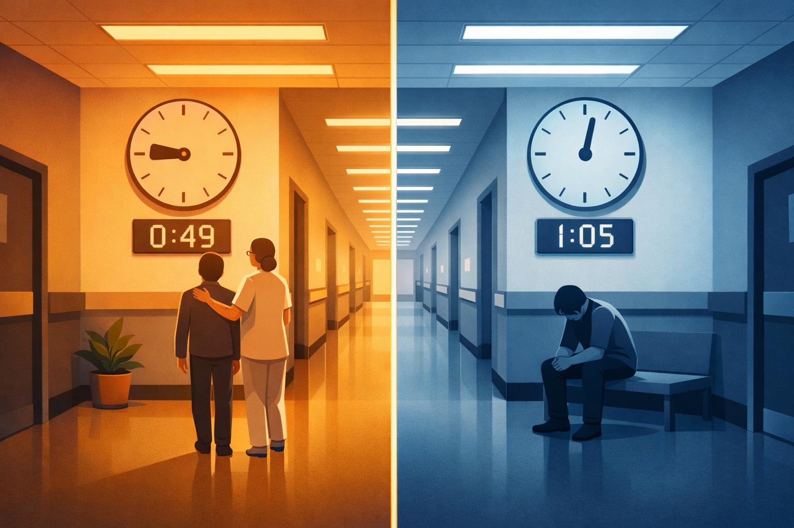
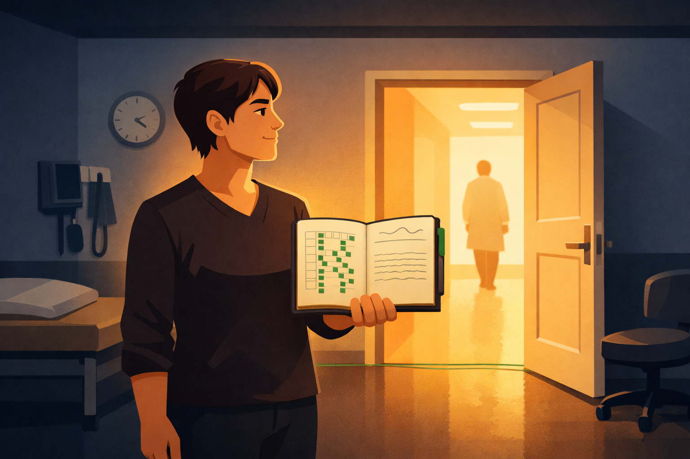

By Rustam Iuldashov
30 years lived experience with chronic migraine | Sources: 29 peer-reviewed references including Frontiers in Health Services (2025), PNAS (2024, multicenter), Journal of Pain (2024), BMC Medical Ethics (2025) | Last updated: March 2026
Medical Review: This content is based on peer-reviewed research from Frontiers in Health Services, PNAS, Journal of Pain, BMC Medical Ethics, Journal of Medical Ethics, Academic Emergency Medicine, PAIN, Journal of Headache and Pain, and PLoS ONE.
Important Notice: This article is for informational purposes only and does not replace professional medical advice. The author is not a licensed physician or healthcare professional. If you experience a sudden severe headache unlike any you have had before, seek emergency care immediately.
Key Takeaways
- Medical gaslighting topped the 2025 ECRI patient safety list — above AI governance failures and cybersecurity breaches. In a 2023 survey, 94% of patients reported being dismissed; 28% experienced a medical emergency as a result.[2][3]
- Migraine patients are especially vulnerable: the disease has no biomarker and is diagnosed entirely on patient testimony — making dismissal both common and clinically dangerous.[1][15]
- The gender pain gap is systemic: women wait 16 minutes longer for pain relief in ERs; Black patients are 22% less likely to receive any pain medication — regardless of the clinician’s gender.[9][26][28]
- Repeated dismissal causes measurable psychological harm — anxiety, depression, and trauma responses that worsen pain outcomes through shared neurobiological mechanisms.[14][15]
- One phrase changes the appointment: “Please document your decision and its reasons in my medical record right now.” Document, bring an advocate, use validated tools, and change providers when necessary.
- Healing from medical trauma is a real process requiring the same care and attention as the physical condition itself.[16][17]
You’ve waited six weeks for this appointment. You’ve written your symptoms down. You’ve rehearsed how to describe the pain without sounding dramatic.
Then the doctor leans back, glances at your labs, and says: “Everything looks normal. It’s probably just stress.”
You leave with no answers. And one new question you didn’t have before: Am I imagining this?
That question — that seed of self-doubt planted by a medical encounter — is the defining injury of medical gaslighting. In 2025, for the first time, a major healthcare safety organization named it the number one threat to patient safety in the world.[1][2]
Not misdiagnosis. Not surgical error. Not antibiotic resistance.
Being dismissed by your doctor.
What Medical Gaslighting Actually Is
The word “gaslighting” comes from a 1944 film in which a husband manipulates his wife into questioning her own sanity. In medicine, the dynamic is similar — though rarely deliberate.
The American Journal of Medicine defines medical gaslighting as “an act that invalidates a patient’s genuine clinical concern without proper medical evaluation, because of physician ignorance, implicit bias, or medical paternalism.”[5] It shows up as dismissing symptoms, interrupting patients, refusing follow-up tests, attributing pain to anxiety or excess weight, and sending people home with skepticism instead of answers.[1][3]
In March 2025, ECRI — a nonprofit that has tracked patient safety for over 50 years — placed this problem at the top of their annual list of the ten greatest threats to patient safety. Above AI governance failures. Above cybersecurity breaches.[2]
The data behind that ranking is devastating. A 2023 national survey found that 94% of respondents had experienced their symptoms being dismissed or ignored by a doctor. Of those, 58% said their condition worsened after the dismissal. And 28% — nearly one in three — experienced a medical emergency as a direct result.[3]
Read that again. One in three patients who were dismissed ended up in an emergency situation.
Why Migraine Patients Are Especially Vulnerable
Migraine affects roughly 15% of the population and is among the conditions most prone to gaslighting.[11] The reason isn’t personal — it’s structural.
Migraine has no biomarker. It doesn’t appear on an MRI. It doesn’t show up in blood work. “All your tests are normal,” the doctor says — not understanding that normal tests are exactly what’s expected with migraine. The diagnosis is clinical, meaning it depends entirely on the patient’s account of their own experience.[1][15]
(Science is slowly moving toward biomarkers — CGRP levels in peripheral blood show promise for chronic migraine — but results remain inconsistent across studies, and in 2026 the diagnosis remains entirely clinical.[27])
That account is easy to dismiss. The word “migraine” is still casually used to mean “a bad headache.” The neurological reality — aura, photophobia, phonophobia, nausea, cognitive disruption, prodrome, postdrome — is invisible to anyone not living inside it. And so clinicians reach for familiar explanations: stress, anxiety, poor sleep, overreaction.[6]
Licensed clinical health psychologist Dr. Melissa Geraghty, who lives with migraine herself, describes the pattern precisely. Migraine is frequently misunderstood as a mere headache, which leads symptoms to be attributed to psychological causes. Patients are told their pain is exaggerated or imagined — and that, she says, is a hallmark of gaslighting that undermines self-confidence and erodes trust in one’s own experience.[6]
The numbers behind this are not abstract. A 2024 survey of 2,028 people with migraine found that 89% said their mental health had been damaged by their condition.[7] But here is the part that should stop every clinician: 34% of respondents reported suicidal thoughts directly linked to their migraine experience — and a significant portion of that psychological devastation traces not to pain alone, but to not being believed.[7]
A disease called “just a headache” produces a rate of suicidal ideation that demands to be reckoned with.
The Gender and Racial Pain Gap: A System Built on Bias
Women develop migraine at roughly three times the rate of men.[10] They are also far more likely to have their pain dismissed. This is not coincidental.
The data tells a story the healthcare system would rather not face:

Gender Gap — By the Numbers
| Measure | Women | Men | Source |
|---|---|---|---|
| Median wait for analgesia (acute abdominal pain) | 65 min | 49 min | Chen et al. 2008, n=981 [26] |
| Likelihood of receiving any painkiller | 60% | 67% | Chen et al. 2008 [26] |
| Pain underestimated on 0–10 scale | Women of color: 3–5 pts lower | All other groups | Ruben et al., J Pain 2024 [8] |
| Report having pain dismissed | 1 in 2 women | — | Nurofen Gender Pain Gap Index 2024 [21] |
Racial Gap — By the Numbers
| Finding | Source |
|---|---|
| Black patients are 22% less likely to receive any pain medication vs. white patients | 20-year meta-analysis, AAMC [28] |
| Black patients receive analgesics for ER fractures at 57% vs. 74% for white patients | Hoffman et al., PNAS 2016 [29] |
| Migraine, back pain & abdominal pain show greatest racial disparity in treatment | Racial disparities meta-analysis [28] |
Critically — and this is the part that surprises people — the bias is not coming only from male clinicians. A 2024 international PNAS study found that women’s pain was undertreated regardless of the gender of the attending doctor or nurse.[9] This is not individual prejudice. It is a cultural infection that runs through the entire system.
Yale neurologist Dr. Christopher Gottschalk put it without diplomacy: “It must be that women complaining of pain in their head and can’t function must be lazy, neurotic, or trying to get away with something.”[20] That assumption — unspoken, unexamined, pervasive — shapes diagnoses every day.
Maya Dusenbery’s 2018 book Doing Harm documented how this bias is not a side effect of modern medicine. It is baked into its foundations. Clinical trials for decades enrolled only male subjects. The “standard human body” in medical textbooks was male. Women’s conditions were, by design, understudied and underunderstood.[18] We are living with the consequences of that choice now.
The Deeper Wound: Epistemic Injustice
Philosopher Miranda Fricker gave this phenomenon a precise name in her 2007 book Epistemic Injustice: Power and the Ethics of Knowing. She called it testimonial injustice: a wrong done to someone specifically in their capacity as a knower.[12]
When a patient describes their pain and is not believed, something deeper than dismissal occurs. They are stripped of the status of someone who knows their own experience. Their testimony — the most direct evidence possible about their inner life — is overruled by a test result that was never designed to capture what they’re feeling.[11]
Applied to healthcare, Carel, Blease and Geraghty argued in the Journal of Medical Ethics that this injustice is medically dangerous. When patient testimony is systematically devalued, the system loses access to the most critical diagnostic information available.[11] For conditions like migraine, where patient self-report is the diagnostic tool, testimonial injustice isn’t philosophical abstraction. It is harm.
Simply being a patient can be enough to experience testimonial injustice — not only because “sick” people are seen as less rational or reasonable, but because patients are treated not as knowers, but as objects of knowledge in medical encounters. If the test results are “normal,” the patient must be wrong.[11][12]
The Wound That Outlasts the Appointment
Being dismissed once is demoralizing. Being dismissed repeatedly creates a different kind of damage.
Research on what a 2023 qualitative study called “clinician-associated trauma” — documented in patients with Ehlers-Danlos Syndrome — found that repeated medical dismissal produces anxiety, depression, hypervigilance in healthcare settings, and symptoms closely resembling PTSD.[15] A 2024 systematic review confirmed that PTSD and chronic pain mutually exacerbate each other through shared psychological mechanisms, including catastrophizing and hyperattention to threat.[14]
Gabor Maté, the renowned Canadian physician and trauma researcher, argues in When the Body Says No that chronic stress — including the sustained stress of not being believed — dysregulates the nervous system in ways that worsen the very physical symptoms being dismissed.[19] In The Myth of Normal, co-written with his son Daniel, he goes further: medical culture, he writes, is part of a broader social pattern that pathologizes distress rather than investigating its causes.[16]
Bessel van der Kolk’s The Body Keeps the Score established that trauma — including repeated interpersonal invalidation — physically alters how the brain and nervous system process threat, pain, and safety.[17] A patient dismissed ten times learns, neurologically, to expect dismissal. They arrive at the next appointment already armored and defensive. That posture is often misread as “difficult” or “non-compliant.” The cycle tightens.
The doctor sees a demanding patient. The patient sees a system that has failed them. Both are right about what they observe. Both are missing the origin story.
⚠️ When to Seek Emergency Help
Medical gaslighting should never become a reason to delay emergency care. Seek immediate help if you experience:
- A sudden, thunderclap headache — the worst of your life, appearing in seconds
- Headache with fever, stiff neck, confusion, or rash
- New neurological symptoms: sudden vision loss, weakness on one side, slurred speech
- Headache following a head injury
- Persistent vomiting with inability to keep fluids down
These symptoms require emergency evaluation. Do not wait. Do not use this article to self-diagnose an emergency.
🚩 Is This Gaslighting? The Checklist
Apply this to your last medical appointment. Check every statement that matches your experience.
Red Flags Checklist
Check the boxes that apply to your experience. Your result will appear below.
That last feeling — the shame for having gone at all — is the most insidious. The system has trained you to self-censor. And a patient who has stopped reporting symptoms has been effectively silenced.[12]
How to Fight Back: Practical Tools
1. Document before you walk in. Write your symptoms down: frequency, duration, severity on a 1–10 scale, associated symptoms, and — crucially — how they affect your ability to function. A migraine diary transforms “I get bad headaches” into longitudinal clinical data that is harder to dismiss.[6]
2. Use validated screening tools. Ask your doctor to review the POUND mnemonic or the ID Migraine three-question screen — both clinically validated tools for migraine diagnosis. Walking in with evidence-based frameworks shifts the conversational power.[20]
3. Request referrals explicitly. You have the right to ask for a referral to a headache specialist. There are fewer than 1,000 certified headache specialists in the United States — wait times can be long — but a single consultation can produce a treatment plan your GP can follow long-term.[15]
4. Bring an advocate. A trusted person attending appointments can serve as witness, help you remember what was said, and ask follow-up questions when you’re too exhausted or in pain to speak for yourself.[18]
5. The one phrase that changes everything.
📋 The Documentation Phrase
“If you’re choosing not to order this test or refer me, please document your decision and its reasons in my medical record right now.”
This sentence creates a legal trail. It signals that you understand your rights. In clinical practice, it frequently causes the clinician to reconsider — because a documented refusal carries professional accountability. Use it calmly. Use it when it matters. It works.

6. Change providers when necessary. If a clinician consistently dismisses you after good-faith efforts to communicate, find another. This is not failure. It is a clinical judgment about the quality of your care. The American Migraine Foundation and National Headache Foundation both maintain searchable directories of headache specialists.[13]
Your Self-Advocacy Toolkit
Before the appointment: written symptom log with dates, severity 1–10, and functional impact. The POUND or ID Migraine screening tool printed out.
During the appointment: bring an advocate. Ask every question on your list. Use the documentation phrase if dismissed without explanation.
After the appointment: request a copy of your medical notes. Document what was said. If you were dismissed, note the date — this pattern of data matters if you escalate care.
If nothing changes: request a specialist referral through your insurance portal, bypassing the GP. Use AMF’s Find a Doctor tool. A headache specialist visit — even once — is worth the wait.
Healing from Medical Trauma
Being repeatedly dismissed is a form of harm. Healing from it requires treating it as such.
Start by acknowledging what happened. Your pain was real. The fact that a doctor did not believe you does not make it less so. Testimonial injustice is a recognized philosophical and clinical phenomenon — not a personal failing.[12]
Find a psychologist who specializes in chronic illness or pain. A health psychologist can help you process the trauma of medical encounters, develop strategies for navigating the healthcare system, and — perhaps most importantly — rebuild trust in your own perception of your body.[18] This is not instead of medical treatment. It is alongside it.
Reconnect with your body on your own terms. Somatic awareness practices, mindfulness, and trauma-informed movement — including yoga, as van der Kolk describes — help restore what repeated dismissal erodes: the internal sense that your body is a reliable source of information, not a source of shame.[17]
And seek community. Online groups of people with migraine — many run by major advocacy organizations — provide something the healthcare system has failed to deliver: an audience that believes you. That recognition is not a luxury. Maté and others in the field of attachment research describe it as a basic human need.[16]
You are the expert on your own experience. Thirty years of living with migraine has taught me that the most important thing is not to let a system that wasn’t built for your pain teach you to doubt yourself. The migraine is real. The dismissal was wrong. And the path forward starts with trusting that you know your own body.
⚕️ Important Medical Disclaimer
This article is for informational and educational purposes only and does not constitute medical advice, diagnosis, or treatment. The author, Rustam Iuldashov, is not a licensed physician, neurologist, or healthcare professional. He is a patient advocate with 30 years of personal experience living with chronic migraine.
All clinical claims in this article are sourced from peer-reviewed research published in indexed medical journals. Study designs and sample sizes are noted where applicable.
Migraine is a complex neurological condition that requires individualized medical treatment. The self-advocacy tools described in this article are intended to support, not replace, the patient–clinician relationship. If you experience symptoms of a neurological emergency — sudden severe headache, vision loss, weakness, or confusion — call your local emergency number immediately.
This content was last reviewed for accuracy on March 23, 2026.
References
- Faytong-Haro M. “Medical gaslighting: navigating patient-clinician mistrust in healthcare.” Frontiers in Health Services, 5:1633672 (2025). doi:10.3389/frhs.2025.1633672. Study design: Narrative review.
- ECRI. “Top 10 Patient Safety Concerns 2025.” March 2025. Study design: Expert consensus / organizational report.
- Chartis Group. “New top patient safety concerns emerge.” Citing 2023 patient survey on medical gaslighting. 2025. Study design: Survey. n=reported as 94% dismissal rate.
- Gabay G, Bokek-Cohen Y. “Medical gaslighting as a threat to beneficence and patient autonomy: a qualitative study.” BMC Medical Ethics, 2025. doi:10.1186/s12910-025-01324-z. Study design: Qualitative narrative interviews. n=14.
- Ng IKS, et al. “Medical gaslighting: a new colloquialism.” Am J Med, 137(10):920–922 (2024). doi:10.1016/j.amjmed.2024.06.022. Study design: Commentary/definition.
- Geraghty M. Association of Migraine Disorders Podcast. S6:Ep7 — “Migraine and Medical Gaslighting.” July 2024. migrainedisorders.org.
- The Migraine Trust. “New research reveals devastating impact of living with migraine.” September 2024. Study design: Survey. n=2,028.
- Ruben M, et al. “Documenting Race and Gender Biases in Pain Assessment.” J Pain, 25(9):104550 (2024). doi:10.1016/j.jpain.2024.104550. Study design: Experimental, multiple cohorts.
- Guzikevits M, et al. “Gender-based disparities in emergency department analgesic treatment.” PNAS. August 13, 2024. Study design: Retrospective international multicenter cohort.
- Laughey W, et al. “Pain in women: bridging the gender pain gap.” PAIN, 2025. PMC12094398. Study design: Perspective with systematic evidence synthesis.
- Carel H, Blease C, Geraghty K. “Epistemic injustice in healthcare encounters: evidence from chronic fatigue syndrome.” J Medical Ethics, 43(8):549–557 (2017). doi:10.1136/medethics-2016-103691. Study design: Philosophical/qualitative analysis.
- Fricker M. Epistemic Injustice: Power and the Ethics of Knowing. Oxford University Press, 2007.
- American Migraine Foundation. “What is Medical Gaslighting?” 2025. americanmigrainefoundation.org.
- Karimov-Zwienenberg M, et al. “Childhood trauma, PTSD/CPTSD and chronic pain: A systematic review.” PLoS One, 19(8):e0309332 (2024). doi:10.1371/journal.pone.0309332. Study design: Systematic review. n=13 studies.
- Halverson CME, et al. “Clinician-associated traumatization from difficult medical encounters: Results from a qualitative interview study on the Ehlers-Danlos Syndromes.” 2023. Study design: Qualitative interviews.
- Maté G, Maté D. The Myth of Normal: Trauma, Illness, and Healing in a Toxic Culture. Avery Press, 2022.
- van der Kolk B. The Body Keeps the Score: Brain, Mind, and Body in the Healing of Trauma. Viking, 2014.
- Dusenbery M. Doing Harm: The Truth About How Bad Medicine and Lazy Science Leave Women Dismissed, Misdiagnosed and Sick. HarperOne, 2018.
- Maté G. When the Body Says No: The Cost of Hidden Stress. Wiley, 2003.
- Gottschalk C, quoted in “Migraine: What to Do When Your Pain Is Dismissed.” WebMD. webmd.com.
- Nurofen / Reckitt Health. Gender Pain Gap Index Report Year 3. October 2024.
- Au L, et al. “Long COVID and medical gaslighting.” SSM Qual Res Health, 2:100167 (2022). doi:10.1016/j.ssmqr.2022.100167. Study design: Qualitative.
- Boakye PN, et al. “Anti-black medical gaslighting in healthcare.” Can J Nurs Res, 57(1):59–68 (2025). doi:10.1177/08445621241247865. Study design: Qualitative.
- Moretti D, et al. “Gender and sex bias in clinical treatment of women’s chronic pain.” Front Med (Lausanne), 10:1189126 (2023). doi:10.3389/fmed.2023.1189126. Study design: Narrative review.
- Migraine Meanderings. “Medical Gaslighting and Migraine: It’s Not All in Your Head.” February 2023. migrainemeanderings.com.
- Chen EH, et al. “Gender Disparity in Analgesic Treatment of Emergency Department Patients with Acute Abdominal Pain.” Academic Emergency Medicine, 15(5):414–418 (2008). doi:10.1111/j.1553-2712.2008.00100.x. Study design: Prospective cohort. n=981.
- Huang Q, et al. “Circulating CGRP as a diagnostic biomarker in female migraine patients.” J Headache Pain, 26:222 (2025). doi:10.1186/s10194-025-02166-1. Study design: Prospective observational. n=184 + 85 controls.
- Sabin JA. “How we fail Black patients in pain.” AAMC. June 2023. Citing 20-year meta-analysis. aamc.org.
- Hoffman KM, et al. “Racial bias in pain assessment and treatment recommendations.” PNAS, 113(16):4296–4301 (2016). doi:10.1073/pnas.1516047113. Study design: Experimental. n=222 medical students and residents.

How We Create Content
- Peer-reviewed sources only. Frontiers in Health Services, PNAS, Journal of Pain, BMC Medical Ethics, Journal of Medical Ethics, Academic Emergency Medicine, PAIN, Journal of Headache and Pain, PLoS ONE, Oxford University Press.
- Study transparency. Study design and sample sizes noted for all clinical references.
- Source verification. All claims backed by numbered references with DOI links.
- Experience + Science. 30 years personal migraine experience combined with peer-reviewed evidence.
- Regular updates. Articles reviewed when significant new research emerges.
- No conflicts of interest. No funding from any pharmaceutical company or healthcare organization.
Turn Your Symptoms Into Evidence
Migraine Companion lets you log attacks, pain levels, sleep quality, and potential triggers — building the longitudinal clinical data that is hardest for doctors to dismiss. Bring your diary to every appointment.
Last reviewed: March 2026
Next scheduled review: September 2026